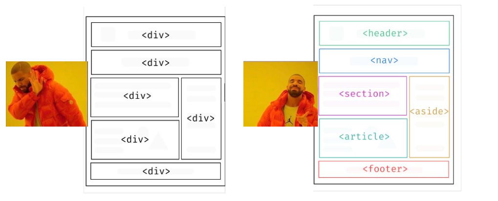

HTML semântico refere-se ao uso de tags que expressam significado e estrutura adequados ao conteúdo que elas envolvem. Em vez de simplesmente usar tags genéricas para formatar o texto, como div e span, o HTML semântico utiliza tags específicas que descrevem o papel do conteúdo dentro da página. Isso melhora a acessibilidade, a indexação pelos motores de busca e a compreensão do conteúdo por outros desenvolvedores.

1.1. Mudanças no HTML:5
O HTML5 trouxe várias mudanças significativas para melhorar a estruturação e a funcionalidade das páginas web:
Tags Semânticas: Introduziu novas tags semânticas como header, footer, nav, article, section, aside, figure, e figcaption, facilitando a criação de layouts mais estruturados e acessíveis.
Formulários Melhorados: Adicionou novos tipos de entrada (como email, url, tel) e atributos para validação de formulários, melhorando a experiência do usuário e a precisão dos dados enviados.
Áudio e Vídeo Nativos: Suporte integrado para reprodução de áudio e vídeo sem a necessidade de plugins adicionais, através das tags audio e video, com suporte para formatos modernos.
Canvas e SVG: Introduziu canvas para desenho gráfico dinâmico via JavaScript e melhorou o suporte para SVG (Scalable Vector Graphics), permitindo gráficos vetoriais escaláveis diretamente na página.
Armazenamento Local: Introduziu API para armazenamento local (localStorage e sessionStorage), permitindo que os aplicativos web armazenem dados de forma persistente no navegador do usuário.
APIs Avançadas: Incluiu APIs para geolocalização, manipulação de histórico de navegação (history API), web sockets para comunicação em tempo real, entre outras, ampliando as capacidades das aplicações web.
Compatibilidade e Desempenho: Focou em melhorar a compatibilidade entre navegadores e aumentar o desempenho das páginas web, oferecendo uma base sólida para o desenvolvimento de aplicações modernas e responsivas.
Essas mudanças tornaram o HTML5 uma plataforma mais poderosa e flexível para o desenvolvimento web, facilitando a criação de sites mais interativos, acessíveis e ricos em recursos.
2. Acessibilidade
A acessibilidade no HTML5 envolve o uso de recursos específicos e melhores práticas para garantir que conteúdos web sejam acessíveis a todos os usuários, incluindo aqueles com deficiências visuais, auditivas, motoras, cognitivas ou outras necessidades especiais. Aqui estão alguns dos principais aspectos e recursos do HTML5 relacionados à acessibilidade:
2.1. Elementos Semânticos: O HTML5 introduziu uma série de novos elementos semânticos que ajudam na estruturação clara e significativa do conteúdo da página. Isso não apenas melhora a SEO, mas também facilita a navegação para usuários de tecnologias assistivas. Exemplos incluem header, nav, main, section, article, aside, footer, entre outros.
Exemplo:
Logo da Empresa
Artigo Principal
Título do Artigo
Conteúdo do artigo...
2.2. Atributos ARIA: ARIA (Accessible Rich Internet Applications) são atributos adicionados a elementos HTML para melhorar a semântica e acessibilidade de elementos interativos. Eles ajudam a descrever a função e o comportamento dos elementos para tecnologias assistivas.
Um exemplo de atributo ARIA (Accessible Rich Internet Applications) é aria-label. Ele é usado para definir uma etiqueta personalizada para um elemento que pode ser lida por tecnologias assistivas, como leitores de tela. Aqui está um exemplo de como utilizá-lo:
Nesse exemplo, o botão tem um "X" visível como seu conteúdo, mas a tecnologia assistiva vai anunciar "Fechar" para os usuários, proporcionando uma melhor compreensão da função do botão.
2.3. Formulários Acessíveis: HTML5 oferece novos tipos de input como email, tel, date, number, entre outros, que ajudam a validar e facilitar a entrada de dados. Além disso, o uso correto de rótulos (label) associados a campos de formulário (input, textarea, select) é crucial para garantir que usuários saibam claramente qual informação é esperada em cada campo.
EXEMPLO:
2.4. Áudio e Vídeo: Elementos audio e video foram introduzidos no HTML5 com suporte embutido para legendas e descrições de áudio/vídeo, permitindo uma experiência mais inclusiva para usuários surdos ou com deficiência auditiva.
EXEMPLO:
2.5. SVG e Canvas: Elementos como svg e canvas permitem a criação de gráficos e conteúdos visuais dinâmicos. Garantir que esses elementos sejam acessíveis inclui a utilização de textos alternativos (title e desc) para descrever gráficos complexos e visualizações.
2.6. Contraste e Legibilidade: A HTML5 não possui recursos específicos para controle de contraste, mas é essencial para a acessibilidade que o contraste entre o texto e o fundo seja suficiente para facilitar a leitura, especialmente para usuários com baixa visão.
2.7. Estruturação e Navegação: A estruturação clara da página e o uso correto de títulos (h1 a h6) ajudam na navegação visual e em leitores de tela, proporcionando uma experiência mais consistente e intuitiva para todos os usuários.
3. Web Scraping
Web scraping é uma técnica usada para extrair dados de websites de forma automatizada. Aqui está uma explicação concisa sobre como funciona e algumas considerações importantes:
3.1. Objetivo: Coletar dados de websites que não fornecem uma API para acesso direto às informações.
# Exemplo: Extraindo todos os títulos de artigos
for article in soup.find_all('h2'):
print(article.get_text())
3.5. Considerações Legais e Éticas:
Respeitar os Termos de Uso: Verificar se o site permite web scraping. Muitos sites têm regras específicas em seus termos de serviço.
Robots.txt: Verificar o arquivo robots.txt do site para entender quais partes do site são permitidas para scraping.
Carga no Servidor: Evitar sobrecarregar os servidores do site com muitas requisições simultâneas.
3.6. Boas Práticas:
Pausas Entre Requisições: Implementar intervalos entre requisições para evitar sobrecarga no servidor.
Rotação de IPs e User Agents: Utilizar proxies e alterar o user agent para evitar bloqueios.
Tratar Exceções: Implementar tratamento de erros para lidar com respostas inesperadas ou falhas na rede.
Web scraping é uma ferramenta poderosa para coleta de dados, mas deve ser usado de forma responsável e ética.
4. Main, header e footer
Os elementos main, header e footer são elementos semânticos introduzidos no HTML5 que ajudam a estruturar o conteúdo de uma página web de forma clara e organizada:
4.1. Main
Descrição: Representa o conteúdo principal de um documento.
Uso: Deve conter o conteúdo que é central para a funcionalidade ou propósito principal da página.
Restrição: Deve haver apenas um main por página, e não deve conter conteúdo repetitivo que aparece em várias páginas (como cabeçalhos ou rodapés).
Exemplo:
-------------------------------------------
Bem-vindo ao meu site
Este é o conteúdo principal.
-------------------------------------------
4.2. Header
Descrição: Representa um grupo de conteúdo introdutório ou de navegação.
Uso: Normalmente inclui logotipos, títulos, menus de navegação e outros elementos de cabeçalho.
Flexibilidade: Pode ser usado em diferentes seções de um documento, não apenas no topo da página.
Exemplo:
---------------------------
Minha Empresa
---------------------------
4.3. Footer
Descrição: Representa o rodapé de uma seção ou documento.
Uso: Normalmente inclui informações de contato, direitos autorais, links de política de privacidade e outros elementos de rodapé.
Flexibilidade: Pode ser usado em diferentes seções de um documento, não apenas no final da página.
Esses elementos ajudam a tornar o HTML mais legível e a melhorar a acessibilidade, proporcionando uma estrutura lógica e clara tanto para desenvolvedores quanto para tecnologias assistivas.
5. Aside, section e nav
Essas tags ajudam a estruturar e organizar o conteúdo de forma semântica, melhorando a usabilidade e a SEO.
5.1. Aside
Propósito: Utilizado para conteúdo que é tangencialmente relacionado ao conteúdo principal. Geralmente, é usado para informações secundárias ou complementares.
Exemplos: Uma barra lateral com links relacionados, uma caixa com informações do autor, ou uma citação.
Benefícios: Ajuda a organizar o conteúdo em uma estrutura lógica, melhorando a acessibilidade e a clareza para os leitores e motores de busca.
5.2. Section
Propósito: Define uma seção temática dentro de um documento. Cada section deve ter um título (usualmente uma tag h1 a h6) e agrupar conteúdo relacionado.
Exemplos: Uma seção de um artigo com subtítulos específicos, uma parte de uma página de serviço com descrição, características e preços.
Benefícios: Facilita a organização e a estruturação do conteúdo, permitindo uma navegação mais clara e uma melhor indexação por motores de busca.
5.3. Nav
Propósito: Define um bloco de navegação contendo links para outras partes do site ou documento. É usado para menus de navegação.
Exemplos: Menus de cabeçalho, barras laterais de links, menus de rodapé.
Benefícios: Melhora a usabilidade e a acessibilidade, ajudando os usuários a navegar facilmente pelo site e permitindo que motores de busca entendam a estrutura de navegação.
Exemplo:
Bem-vindo ao Meu Site
Artigo Principal
Este é o conteúdo principal do site. Aqui você encontrará as informações mais importantes.
Artigo Secundário
Este é um artigo secundário que complementa o conteúdo principal com informações adicionais.
Explicação do Código:
header: Contém o cabeçalho do site com o título principal.
nav: Define a seção de navegação principal com links para as páginas do site.
role="navigation": Especifica que esta seção é destinada para navegação.
main: Contém o conteúdo principal do documento.
section>: Define duas seções distintas dentro do conteúdo principal.
Primeira section: Contém um artigo principal.
Segunda section: Contém um artigo secundário que complementa o principal.
aside: Contém conteúdo secundário ou complementar, como links relacionados.
footer: Contém o rodapé do site com informações de copyright.
Esse código organiza o conteúdo de forma clara e semântica, melhorando a estrutura e a acessibilidade da página.
6. Article, blockquote e Q
Essas tags ajudam a melhorar a semântica e a estrutura do conteúdo, facilitando a leitura e a interpretação tanto para usuários quanto para motores de busca.
6.1. Article
Propósito: Define um conteúdo independente e autocontido que pode ser distribuído e reutilizado em diferentes contextos. Normalmente usado para artigos de blog, notícias ou postagens.
Exemplos: Uma postagem de blog, um artigo de notícia, uma entrada em um fórum.
Benefícios: Ajuda a estruturar o conteúdo de maneira lógica e semanticamente, facilitando a indexação e a reutilização.
6.2. Blockquote
Propósito: Usado para citar longas seções de texto de outras fontes. O conteúdo dentro de blockquote é geralmente formatado com uma margem ou recuo para destacar que é uma citação.
Exemplos: Citações de artigos, depoimentos extensos, trechos de livros ou discursos.
Benefícios: Melhora a clareza e a organização ao destacar e distinguir citações de outras partes do texto.
6.3. Q
Propósito: Utilizado para citações curtas dentro de uma linha de texto. Normalmente, o navegador adiciona aspas ao redor do conteúdo dentro de q.
Exemplos: Citações curtas em um parágrafo, como uma frase de alguém. Exemplo:A corrida era boa.
Benefícios: Fornece uma maneira semântica de marcar citações curtas, melhorando a estrutura e a legibilidade do texto.
Exemplo:
A Importância da Leitura
Publicado em
Leitura é uma atividade fundamental para o desenvolvimento pessoal e profissional. Ela expande o vocabulário, melhora a escrita e oferece novos conhecimentos.
Um leitor vive mil vidas antes de morrer, disse Jojen. O homem que nunca lê vive apenas uma. - George R.R. Martin
A prática regular da leitura pode proporcionar uma melhor compreensão do mundo e das pessoas ao nosso redor. É um hábito que pode ser cultivado em qualquer idade.
No exemplo acima:
article: Define um artigo independente que pode ser reutilizado de forma independente.
blockquote: Usado para citar uma seção de outra fonte.
q: Utilizado para citações curtas dentro do texto
7. Figure, figcaption e picture
7.1. Figure
Propósito: Usado para agrupar conteúdo ilustrativo, como imagens, gráficos, diagramas ou qualquer outro conteúdo visual, que pode ser referenciado no texto. Como se fosse um conteiner.
Exemplos: Agrupar uma imagem com sua legenda, diagramas com descrições, gráficos com explicações.
Benefícios: Ajuda a associar o conteúdo visual com sua descrição, melhorando a acessibilidade e a organização do conteúdo.
7.2. Figcaption
Propósito: Fornece uma legenda ou descrição para o conteúdo dentro do figure.
Exemplos: Uma breve descrição ou título para uma imagem, explicação para um gráfico ou diagrama.
Benefícios: Facilita a compreensão do conteúdo visual para todos os usuários, incluindo aqueles que utilizam leitores de tela.
7.3. Picture
Propósito: Oferece uma maneira flexível de exibir diferentes versões de uma imagem, dependendo das condições de exibição, como a largura da tela ou a densidade de pixels do dispositivo.
Exemplos: Carregar imagens de alta resolução para dispositivos com telas de alta densidade de pixels, ou versões menores para dispositivos móveis.
Benefícios: Melhora a performance e a responsividade do site ao carregar imagens apropriadas para diferentes dispositivos e condições.
Exemplo de uso conjunto:
Legenda descrevendo a imagem.
No exemplo acima:
A tag picture permite carregar diferentes versões da imagem com base na largura da tela.
A tag figcaption fornece uma legenda descritiva para a imagem agrupada dentro da tag figure.
8. O que é SEO
SEO (Search Engine Optimization) é o conjunto de técnicas e práticas voltadas para otimizar um site ou página web, visando melhorar seu posicionamento nos resultados orgânicos dos motores de busca, como Google, Bing e Yahoo.
8.1. Principais Componentes de SEO:
Palavras-chave: Seleção e uso estratégico de termos de busca que os usuários utilizam para encontrar conteúdo relacionado ao seu site.
Conteúdo de Qualidade: Criação de conteúdo relevante, útil e bem-estruturado que responda às perguntas e necessidades dos usuários.
Otimização On-Page: Melhoria de elementos dentro do site, como tags de título, meta descrições, cabeçalhos, URLs amigáveis, e uso adequado de tags HTML (como h1, h2, etc.).
Otimização Off-Page: Práticas externas ao site que influenciam seu ranking, como backlinks de qualidade, presença em redes sociais e marketing de conteúdo.
Experiência do Usuário (UX): Garantir que o site seja fácil de navegar, rápido para carregar e responsivo (adaptável a diferentes dispositivos).
Técnicas Avançadas: Implementação de práticas como a otimização de velocidade do site, uso de dados estruturados (schema.org), e adaptação para a busca por voz.
8.2. Benefícios do SEO:
Maior Visibilidade: Melhora a posição nos resultados de busca, aumentando a visibilidade do site.
Tráfego Orgânico: Atrai visitantes sem a necessidade de anúncios pagos, baseando-se na relevância e qualidade do conteúdo.
Credibilidade e Autoridade: Sites bem posicionados são vistos como mais confiáveis e autoritativos pelos usuários.
ROI Sustentável: Investimentos em SEO podem trazer resultados a longo prazo, com um retorno contínuo.
SEO é essencial para qualquer estratégia de marketing digital, ajudando a atrair mais visitantes qualificados e a converter esses visitantes em clientes ou leads.